Home / CINEOSIS / CINEOSIS · hybrid atlas
Test CIN-03 CINEOSIS
CINEOSIS · hybrid atlas
84 passages across all 45 signs: an automatic pipeline picks two archive clips per sign, finds the ground, and walks Bola into each one.
- Part of
- CINEOSIS, in five passes · part 3 of 8, Automatic
← before · next → - Running time
- 12:01
- Made
- 2026-10-18
- Program
- CINEOSIS
- Characters
- Bola
- File
- mp4, 960 wide, 49 MB
Production notes · CINEOSIS hybrid atlas: what scaling taught us
This round built 84 passages across all 45 signs:
- 78 automatic passages, two new plates for every sign apart from the six pilot signs.
- 6 pilot passages, carried over from the pilot.
The film is about 12 minutes long. A fresh critic, who had not seen the work being made, reviewed it:
- a survey of the whole film
- start, middle and end strips for all 78 automatic passages
- consecutive-frame crops of 6 passages
The automatic pipeline (per plate, no hand placement)
How one passage is put together, step by step.
- Plate choice. Take the two best-scoring examples per sign, then trim each to its longest cut-free segment (up to 8.5 s).
- Analysis. For each plate, measure: - the picture area inside any black bars - a camera track (feature homographies chained from the middle frame) - object mattes (ISNet, every 15th frame, carried between samples by the track) - person detection - colour and exposure statistics
- Mode. Each plate is staged in one of three modes: - G (ground): Bola walks in from the nearer edge to a spot on the ground, sized for that depth, or at 85% of a person's height when a person is found. - S (surface): she stands small on a photographed tabletop or object. - P (proscenium): for close-ups, titles and abstract images, she stands in front of the image like a figure before a cinema screen and casts her shadow onto it.
- Action. Each sign has its own gesture sequence, for example: a point for Solid perception, cowering for Originary world, a dance for Plastic figure, cupping an ear for Sonsign, leaning in to read for Lectosigns.
- Integration. - Objects whose base is nearer the camera than her feet occlude her. - Her shadow falls on the ground (G, S) or on the image plane (P). - The grade follows the plate: mono with a tint, or colour matched by saturation and white balance. - She is softened through the plate's native resolution and given grain. - Footsteps come from her foot contacts, mixed over the plate's own sound.


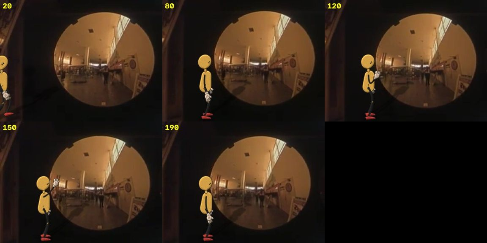
pipeline test
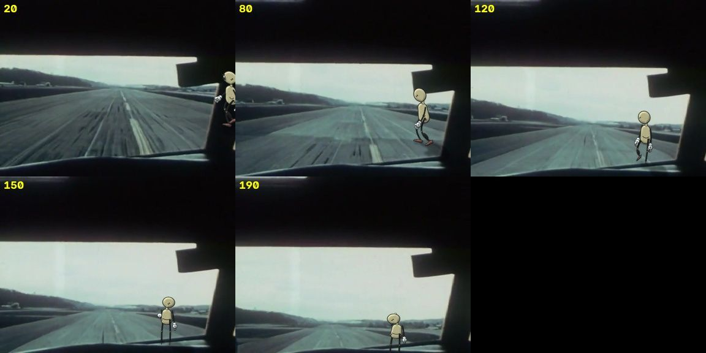
pipeline test
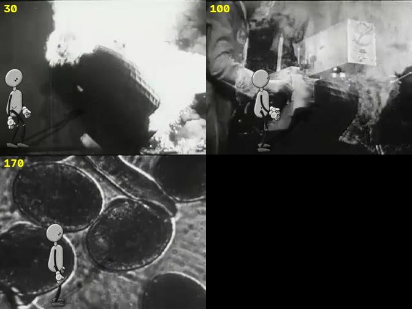
pipeline test
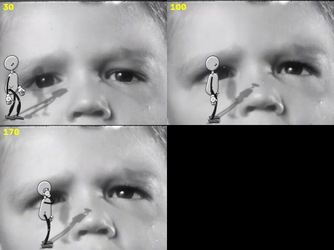
pipeline testResult, by the critic's count
This is where the blind reviews come in.
| Works | Partly | Fails | |
|---|---|---|---|
| All 78 automatic passages | ~30 (38%) | ~34 (44%) | ~14 (18%) |
| P (proscenium) | ~55% | ||
| S (surface) | ~45% | ||
| G (ground) | ~25% |
Best in the atlas:
- 18 Ma, a photographer on a dune: she stays locked to the sand through the camera tilt, with a matching shadow, at the photographer's scale. This is the reference plate for G mode.
- 20 En, a tractor: she scales correctly through the dolly-in.
- 19 Su, the Keaton plate: she stands beside the comedian.
- 8 Fe, the giant shoes: she is tiny beside them on the floor.
- 4 Ic, the boy's face: her shadow falls across the face.
- 16 Pl, the chorus line: a dancer's dress passes in front of her.

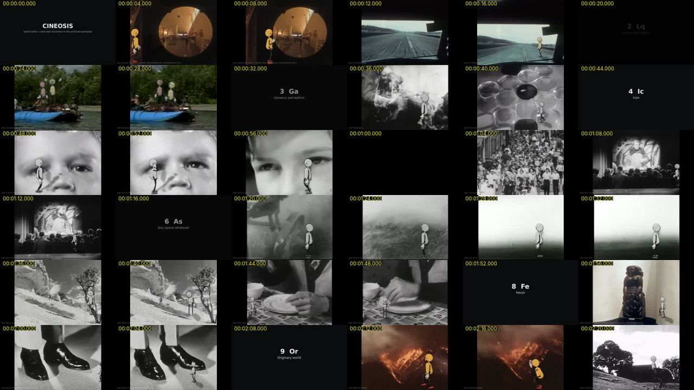
survey sheet Critic: atlas survey 1
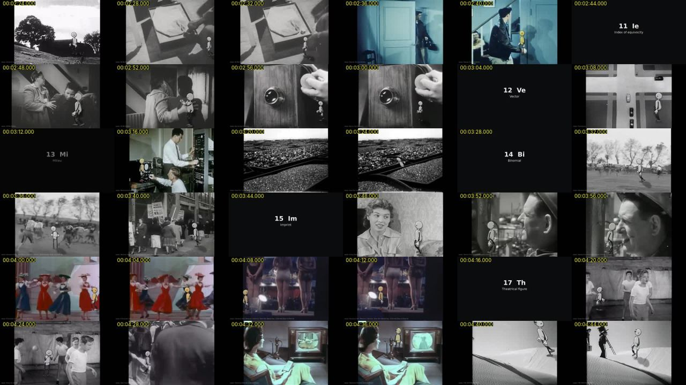
survey sheet Critic: atlas survey 2
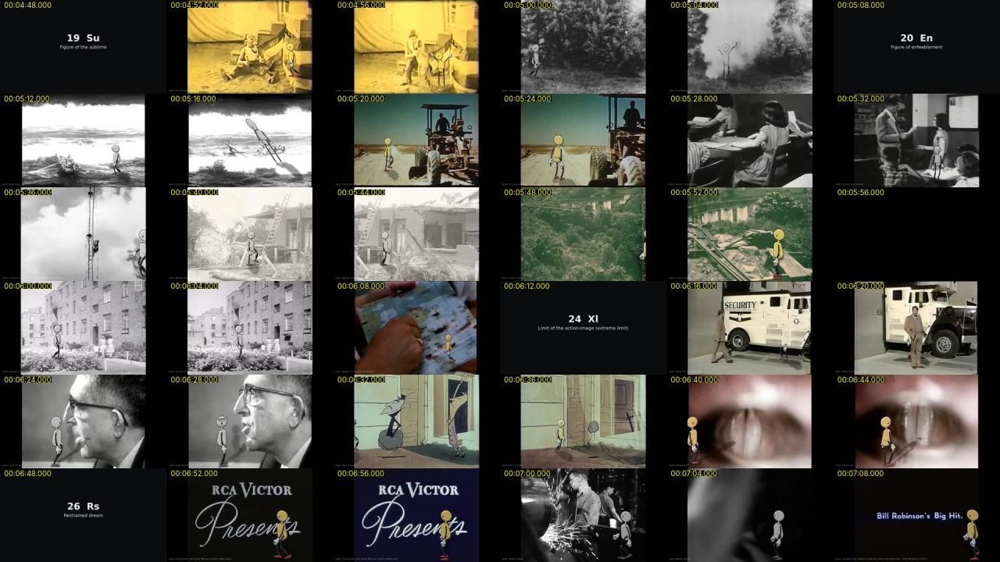
survey sheet Critic: atlas survey 3
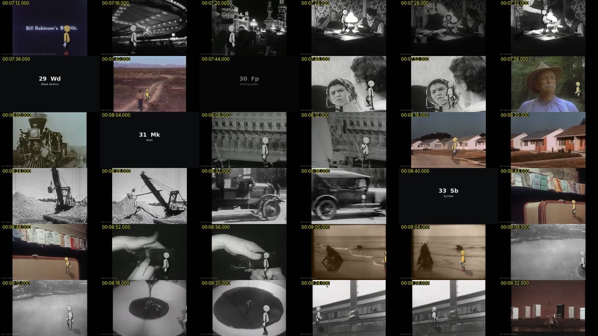
survey sheet Critic: atlas survey 4
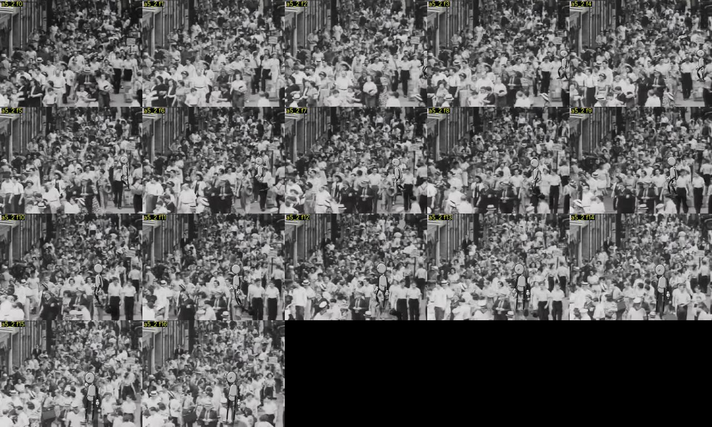
critic sheet Critic: atlas passage, sign 5.2
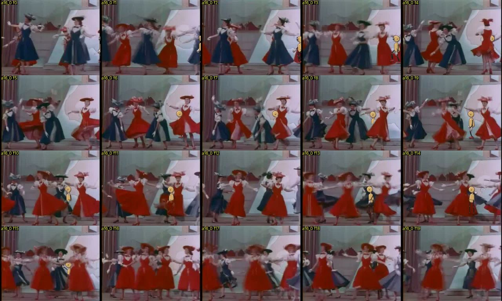
critic sheet Critic: atlas passage, sign 16.0
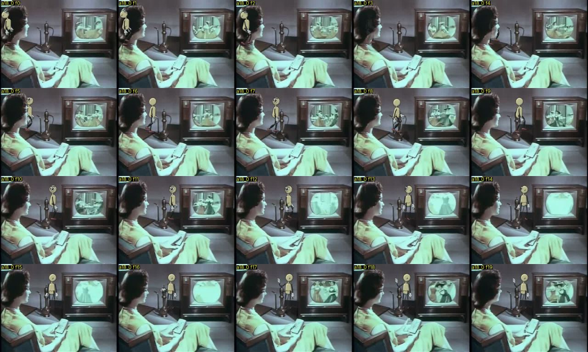
critic sheet Critic: atlas passage, sign 18.0
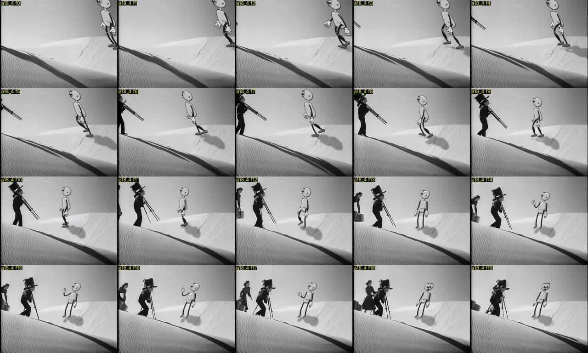
critic sheet Critic: atlas passage, sign 18.4
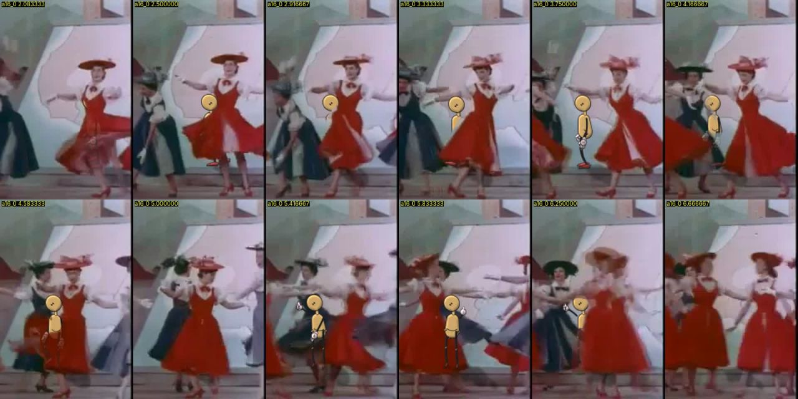
frame crops Critic: crash lab page, a16_0_50
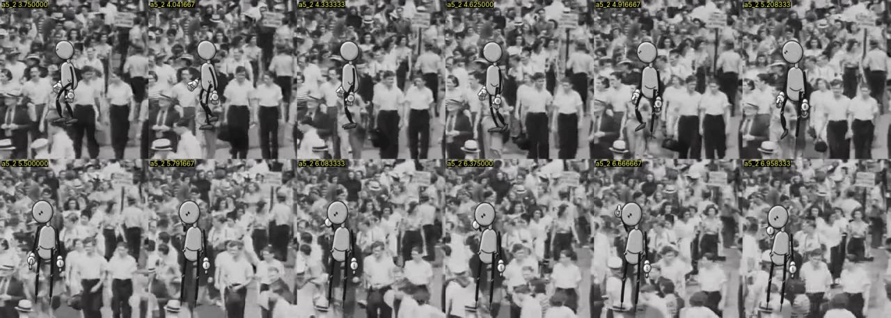
frame crops Critic: crash lab page, a5_2_90
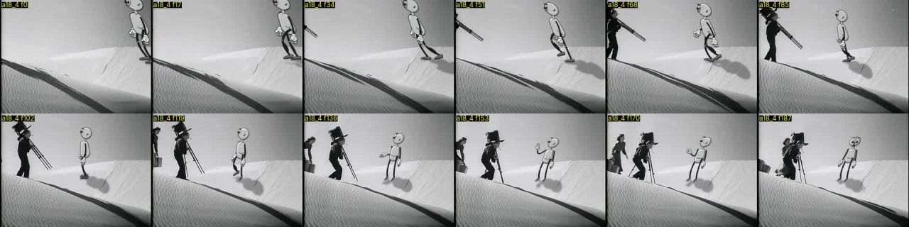
frame crops Critic: crash lab page, a18_4_0
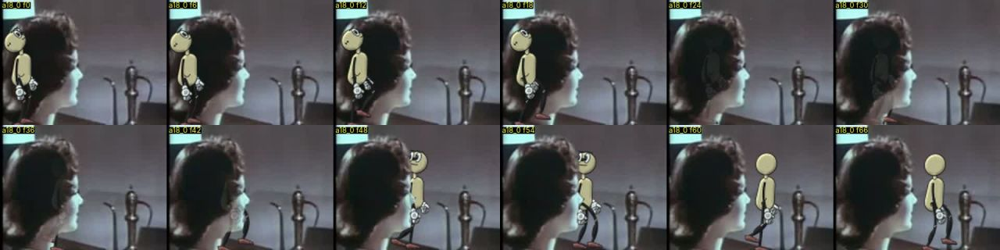
frame crops Critic: crash lab page, a18_0_0What fails, and how often
What broke, and what was changed because of it.
- Hidden cuts and dissolves inside plates: 37%. They are fatal in G and S, mostly harmless in P. Soft archival footage defeats ordinary scene detection.
- Bola off frame or cut by the edge: about 13%. Causes: short trims, slow entries, a track that carries her out.
- Wrong support or scale: about 12%, all in G. She stands at person height on a desk or console, or in crowds with no visible floor.
- Occlusion matte errors: about 10%. She ghosts through people, is erased by the very surface she stands on, or nearer people pass behind her.
- The track applied as rotation or shear on zoom and roll plates. Rare, but each case is the worst artifact in the atlas.
- Plate mismatch: about 13%. Dark plates give her no visible contact, she is lit for day on night plates, and her yellow is too loud on tinted plates.
Next fixes, ranked by passages lifted
What broke, and what was changed because of it.
- Shot segmentation tuned for soft footage, including dissolves. Then either trim to one shot or re-stage per shot. About 13 G/S passages lifted and about 14 P passages cleaned.
- Keep her in frame: at least 70% of the passage fully visible, entry finished within 1.5 s, and re-anchoring when the track drifts. About 10 lifted.
- Support and scale validation: feet only on floor-class pixels, scale checked against people, tabletops routed to S. About 9 lifted.
- Occlusion that is temporally stable, comes only from bases nearer the camera than her feet, and never from her own support surface. About 8 lifted.
- Plate matching: grain, blur, exposure and tint matched to the plate, a footlight for P on dark plates, and the track clamped to translation plus uniform scale. About 10 lifted.
Drop or reroute:
- dense crowds with no visible floor
- zoom or roll plates in G
- plates under about 100 frames after trimming
- already-animated plates
- interiors with furniture, which should go to S
What carries over:
- P is the mode that survives cuts, so any plate that cannot be cleaned goes there.
- Open ground with a mid-distance person is where G works.

More from CINEOSIS
 CINEOSIS · in the crash labThe family performs all 45 signs over 59 measured worlds, each sign its own shot list of cameras, cuts, mirrors and time maps.
CINEOSIS · in the crash labThe family performs all 45 signs over 59 measured worlds, each sign its own shot list of cameras, cuts, mirrors and time maps. CINEOSIS · hybrid pilotSix signs, six real archive clips: the dummies fitted by hand into each plate's camera, light and occlusion, from a lamplit desk to a moving raft.
CINEOSIS · hybrid pilotSix signs, six real archive clips: the dummies fitted by hand into each plate's camera, light and occlusion, from a lamplit desk to a moving raft. CINEOSIS · handmadeEvery sign authored by hand over unaltered archive clips, two passages per sign, each reviewed blind by a fresh critic.
CINEOSIS · handmadeEvery sign authored by hand over unaltered archive clips, two passages per sign, each reviewed blind by a fresh critic. CINEOSIS · Hand ButterThe making-of, performed in a screening room by the film's own cast: Bola and Shim show their work, and a blindfolded Critic judges the pictures without knowing what was meant.
CINEOSIS · Hand ButterThe making-of, performed in a screening room by the film's own cast: Bola and Shim show their work, and a blindfolded Critic judges the pictures without knowing what was meant.